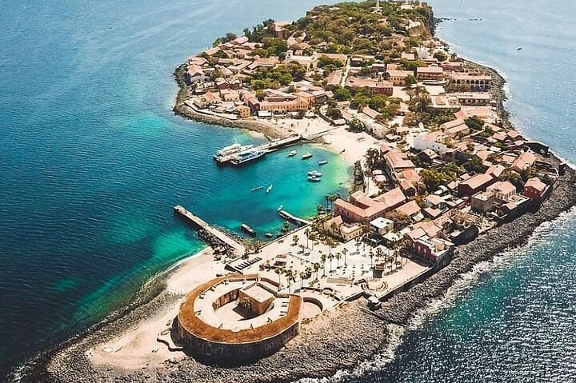
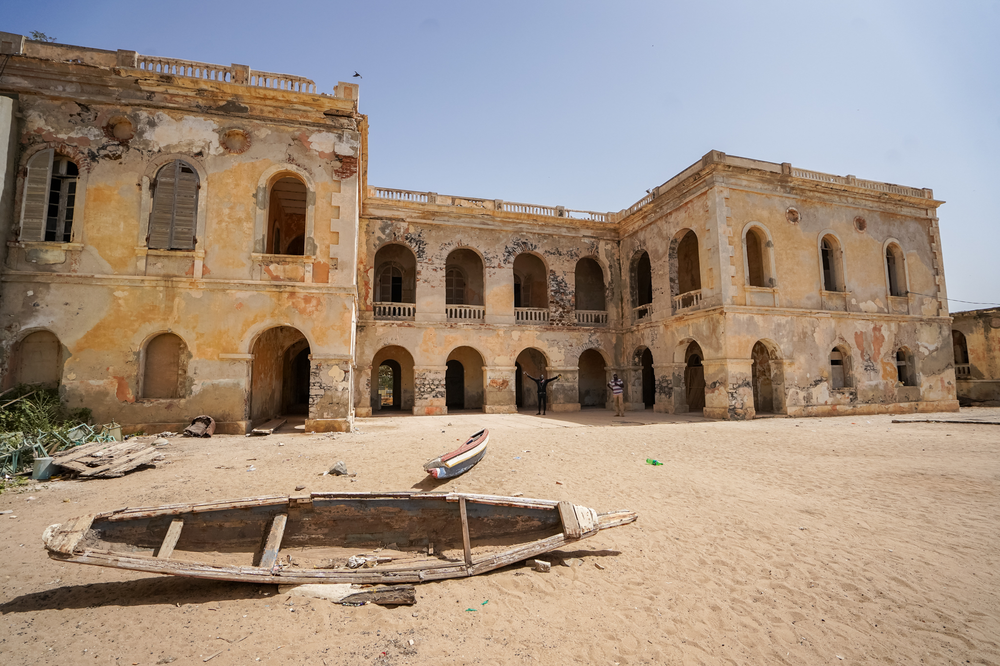

L’île de Gorée, située au large de Dakar, a une histoire riche et complexe, marquée par la colonisation et la traite des esclaves. Elle a été découverte par les Portugais en 1444, qui furent les premiers Européens à s’y établir. À partir du XVe siècle, l’île devint un point stratégique pour le commerce entre l’Europe, l’Afrique et le Nouveau Monde. Au fil des siècles, Gorée passa sous le contrôle de différentes puissances coloniales : les Portugais, les Néerlandais, les Anglais et les Français, ces derniers prenant définitivement possession de l’île en 1817. Pendant cette période, l’île joua un rôle central dans la traite transatlantique des esclaves. La Maison des Esclaves, construite au XVIIIe siècle, illustre cette sombre période. Elle servait de lieu de détention pour les esclaves avant leur déportation. Après l'abolition de l'esclavage en 1848, Gorée perdit son importance économique et militaire. L'île devint progressivement un lieu résidentiel et administratif avant de tomber dans une relative quiétude. Au XXe siècle, Gorée renaît comme symbole de mémoire, attirant l’attention internationale sur l’histoire de la traite des esclaves. En 1978, l’île fut inscrite au patrimoine mondial de l’UNESCO en reconnaissance de son importance historique. Aujourd’hui, Gorée est un lieu de commémoration, de tourisme et d’échanges culturels, rappelant à tous l’importance de se souvenir de cette période tragique de l’histoire humaine.
Touchez la photo pour voir la video
BIENVENUE A L'ILE DE GOREE
HISTORIQUE DE L'ILE DE GOREE
MUSEES DE L'ILE DE GOREE
L’île de Gorée abrite plusieurs musées emblématiques. La Maison des Esclaves retrace l’histoire de la traite des esclaves avec sa célèbre « porte du non-retour ». Le Musée de la Femme Henriette-Bathily met en lumière le rôle des femmes dans la société sénégalaise, tandis que le Musée Historique de Gorée explore l’histoire générale de l’île, de la période précoloniale à la colonisation. Ces lieux préservent la mémoire et attirent des visiteurs du monde entier.
Description de l'île de Gorée

L’île de Gorée, située à 3 kilomètres au large de Dakar au Sénégal, est une petite île d’environ 28 hectares. Elle est célèbre pour son histoire liée à la traite des esclaves et son architecture coloniale bien préservée. Ses rues pavées et ses maisons colorées, souvent construites en pierre, reflètent le style européen des XVIIe et XVIIIe siècles, mélangé aux influences locales. L’île est dominée par plusieurs sites historiques, notamment la Maison des Esclaves, les anciens forts militaires (comme le Castel) et le Musée Historique de Gorée. Aujourd’hui paisible et accueillante, Gorée offre une atmosphère sereine, loin de son passé tragique. Avec sa population modeste, l’île est aussi un centre culturel dynamique, abritant des artistes, des artisans et des musées qui célèbrent la mémoire et le patrimoine africain. C’est un lieu incontournable pour les visiteurs, combinant histoire, culture et beauté naturelle.